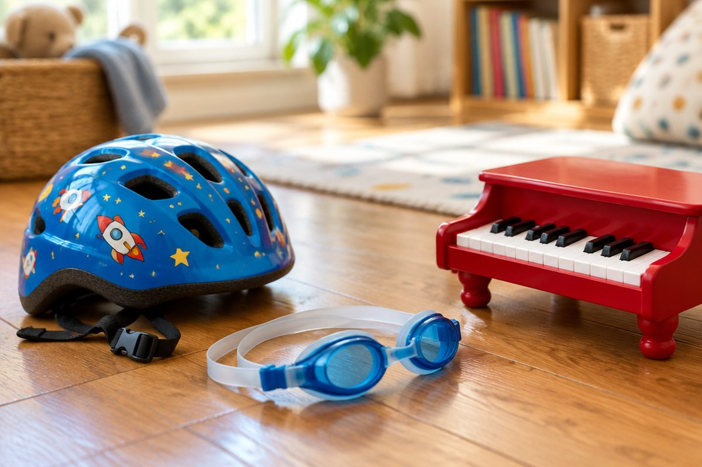

중국어로 '나는 ~할 수 있어요' 말해 볼까요?

수영, 자전거, 피아노… 여러분이 배워서 할 수 있게 된 것은 무엇인가요? 오늘은 중국어로 '할 수 있어요', '못 해요'를 말하고 친구에게 물어보는 법을 배워요.
我会(wǒ huì) + 하는 일
会(huì, 후이)는 '(배워서) ~할 줄 알다, ~할 수 있다'예요. 我会 뒤에 하는 일을 붙이면 '나는 ~할 수 있어요'가 돼요.
我会游泳。(wǒ huì yóuyǒng, 워 후이 여우융)은 '나는 수영할 수 있어요.'예요. 游泳은 '수영하다'예요.
会는 연습해서 익힌 솜씨에 써요. 수영, 자전거, 악기, 외국어처럼 배워야 할 수 있는 것들이지요.
我 + 会 + 游泳 → 我会游泳。(나는 수영할 수 있어요.)
못 할 때는 不会(bú huì)
아직 못 하면 会 앞에 不를 붙여 不会(bú huì, 부 후이)라고 해요. 我不会游泳。는 '나는 수영을 못 해요.'예요.
不는 원래 bù인데, 会(huì)처럼 4성 앞에서는 bú(부)로 올려 읽어요. 是 앞에서 不是(bú shì)로 읽은 것과 같은 규칙이에요.
我会骑自行车，我不会游泳。(나는 자전거는 탈 수 있지만 수영은 못 해요.)
묻고 대답하기
'~할 수 있니?'는 你会 ~ 吗？로 물어요. 你会弹钢琴吗？(nǐ huì tán gāngqín ma, 니 후이 탄 깡친 마)는 '너 피아노 칠 줄 알아?'예요.
대답은 짧게 会！(할 수 있어!) 또는 不会。(못 해.)라고 하면 돼요.
'너는 무엇을 할 수 있어?'는 你会做什么？(nǐ huì zuò shénme, 니 후이 쭤 선머)예요. 做는 '하다'예요.
A: 你会弹钢琴吗？ B: 会！我会弹钢琴。
'중국어 할 줄 알아요?' — 언어 말하기
说(shuō, 숴)는 '말하다', 汉语(Hànyǔ, 한위)는 '중국어'예요. 你会说汉语吗？는 '너 중국어 할 줄 알아?'예요.
조금 할 수 있다면 我会说一点儿汉语。(wǒ huì shuō yìdiǎnr Hànyǔ, 워 후이 숴 이디얼 한위), '나는 중국어를 조금 할 줄 알아요.'라고 해요. 一点儿은 '조금'이에요.
英语(Yīngyǔ, 잉위)는 영어, 韩语(Hányǔ, 한위)는 한국어예요.
A: 你会说汉语吗？ B: 我会说一点儿汉语。
핵심 낱말
- 会 (huì)
- (배워서) ~할 줄 알다, ~할 수 있다
- 不会 (bú huì)
- ~할 줄 모르다, 못 하다
- 说 (shuō)
- 말하다
- 汉语 (Hànyǔ)
- 중국어
- 一点儿 (yìdiǎnr)
- 조금
꼭 알아야 할 표현
| 我会游泳。 | 나는 수영할 수 있어요. | wǒ huì yóuyǒng (워 후이 여우융) |
| 我不会游泳。 | 나는 수영을 못 해요. | wǒ bú huì yóuyǒng (워 부 후이 여우융) |
| 你会说汉语吗？ | 너 중국어 할 줄 알아? | nǐ huì shuō Hànyǔ ma (니 후이 숴 한위 마) |
| 我会说一点儿汉语。 | 나는 중국어를 조금 할 줄 알아요. | wǒ huì shuō yìdiǎnr Hànyǔ (워 후이 숴 이디얼 한위) |
| 你会做什么？ | 너는 무엇을 할 수 있어? | nǐ huì zuò shénme (니 후이 쭤 선머) |
| 我会弹钢琴。 | 나는 피아노를 칠 수 있어요. | wǒ huì tán gāngqín (워 후이 탄 깡친) |
| 我会骑自行车。 | 나는 자전거를 탈 수 있어요. | wǒ huì qí zìxíngchē (워 후이 치 쯔싱처) |
| 我会踢足球。 | 나는 축구를 할 수 있어요. | wǒ huì tī zúqiú (워 후이 티 쭈치우) |
| 我会画画儿。 | 나는 그림을 그릴 수 있어요. | wǒ huì huà huàr (워 후이 화 활) |
| 我会说英语。 | 나는 영어를 할 줄 알아요. | wǒ huì shuō Yīngyǔ (워 후이 숴 잉위) |
한 줄 정리
- 我会 + 하는 일: '나는 ~할 수 있어요.' (배워서 익힌 솜씨)
- 못 할 때는 不会(bú huì): 我不会游泳。
- 你会 ~ 吗？로 묻고 会！/ 不会。로 대답해요. 我会说一点儿汉语。= 중국어 조금 해요.